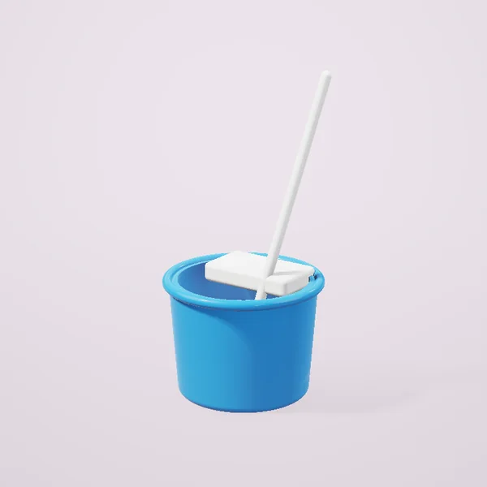
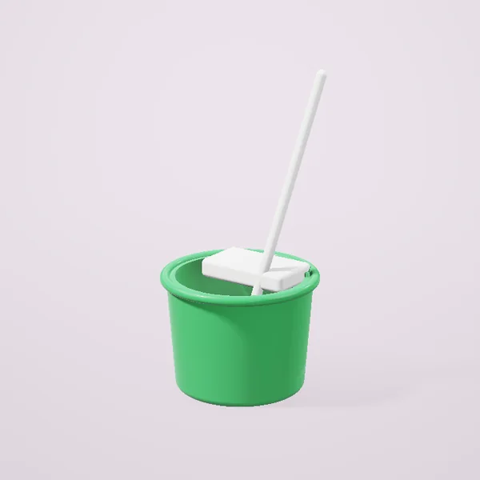
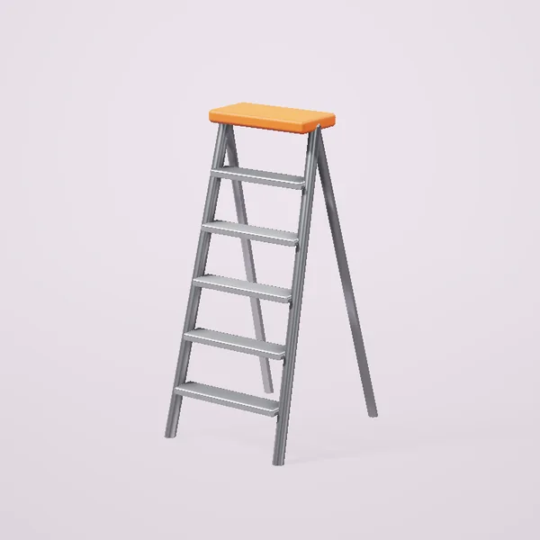
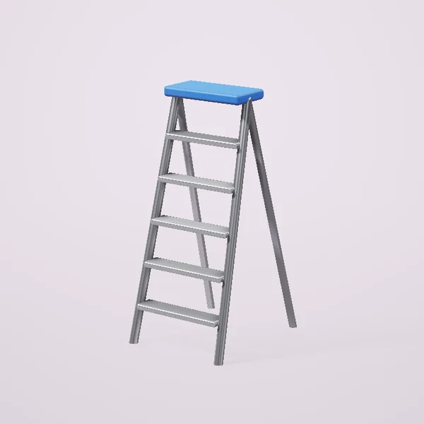

Xöjalik mollari Toşkentda
Tozalaş

Tozalaş töplami: çelak va şvabra145 000 so‘mdan
Tozalaş töplami, yaşil145 000 so‘mdan
Narvonlar

Alyuminiy narvon, 6 poğona520 000 so‘mdan- Alyuminiy narvon, 3 poğona286 000 so‘mdan
- Alyuminiy narvon, 8 poğona728 000 so‘mdan

Uç qismli narvon 3×91 223 000 so‘mdan